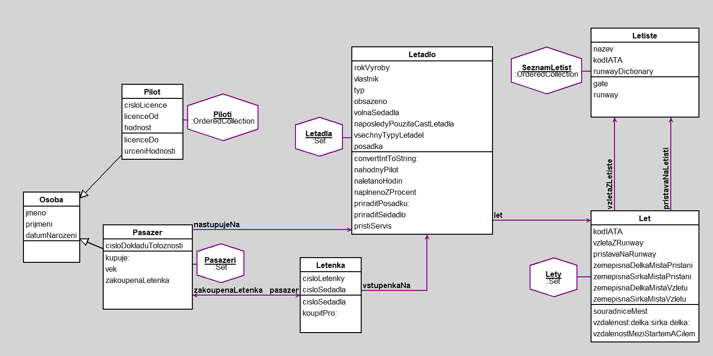

Semestralni projekt - Let letadlem
author(s): Martin Dub
__|__ __|__
--@--@--(_)--@--@-- --@--@--(_)--@--@--
Tento projekt se zabyva kompletnim zpracovanim dat potrebnym k provedeni jednoho letu.
Zpracovano:
• Pilot
• Pasazer
• Letadlo
• Letiste
• Letenka
• Let
Tyto tridy se plni informacemi ze setu:
• Piloti
• Pasazeri
• Letadla
• Letiste
• Sedadlo
Metody:
• vek - pocita aktualni vek pasazera, hlida mladistve a dospele osoby
• hodnost - z pole hodnosti vybira aktuali pozici pilota v letadle
• licenceDo - hlida platnost licence pilota, vzdy na 5 let
• cisloSedadla - propojuje vazbu Pasazer (cisloLetenky) -> Letadlo (cisloSedadla)
• gate - nahodne prirazuje letadlu gate, kde se budou shlukovat pasazeri
• runway - vzletova/pristavaci runway, prirazena kazdemu letisti podle Dictionary
• mapovaniTypuLetadelNaPocetSedadel - Dictionary na kapacitu kazdeho typu letadla
• naletanoHodin - prumerny pocet naletanych hodin daneho stroje, odviji se od roku vyroby
• naplneno - vraci procentualni plnost letadla
• priraditSedadlo - stezejni metoda, popsana v komentarich
• rozlozeniSedadel - matice sedacek v letadle, podle tohoto schematu se prirazuji cisla sedadel pasazerum
• souradniceMest - matice souradnic mest a jejich letist
• vzdalenostMeziMesty - Pouziva Haversine formula na vypocet vzdalenosti mezi mesty vzhledem k zemepisne sirce a delce
__|__ __|__
--@--@--(_)--@--@-- --@--@--(_)--@--@--
Workspace
"Vsichni zletili pasazeri"
(Pasazeri select:[:pasazer | pasazer vek > 18]).
"Pilot s cislem licence 19300"
(Piloti select:[:pilot | pilot cisloLicence = 19300])
"Letadla, ktera poleti (Letadla naplnena na mene nez 5 procent nevzletnou)"
(Letadla reject:[:letadlo | letadlo naplnenoZProcent < 5]).
"Vyhleda letiste s kodem PRG"
(SeznamLetist select:[:r | r kodIATA = #PRG]).
"Sbira data o nezletilych pasazerech a zobrazuje cislo jejich sedadla"
(Pasazeri select: [:r | r vek < 18]) collect: [:r | r jmeno] with: [:r | r zakoupenaLetenka cisloSedadla].
"Veskere detaily letadla Air France"
(Letadla select: [:letadlo | letadlo vlastnik = 'Air France']) collect: [:letadlo | letadlo posadka] with: [:letadlo | letadlo pristiServis] with: [:letadlo | (letadlo let) pristavaNaRunway] with: [:letadlo | (letadlo let) vzdalenostMeziStartemACilem].
Workspace Objects
-
Letadla :Set
-
Lety :Set
-
Pasazeri :Set
-
Piloti :OrderedCollection
-
SeznamLetist :OrderedCollection
Script
"Set"
Pasazeri := Set new.
Piloti := OrderedCollection new.
Letadla := Set new.
SeznamLetist := OrderedCollection new.
Lety:= Set new.
"Pasazeri"
pasazer1 := Pasazer jmeno: 'Martin' prijmeni: 'Dub' datumNarozeni: (Date newDay: 11 monthNumber: 10 year: 1998) cisloDokladuTotoznosti: '201245673'.
pasazer2 := Pasazer jmeno: 'Martin' prijmeni: 'Oak' datumNarozeni: (Date newDay: 4 monthNumber: 5 year: 1987) cisloDokladuTotoznosti: '201244564'.
pasazer3 := Pasazer jmeno: 'Lorem' prijmeni: 'Ipsum' datumNarozeni: (Date newDay: 1 monthNumber: 1 year: 2004) cisloDokladuTotoznosti: '203122846'.
pasazer4 := Pasazer jmeno: 'Jan' prijmeni: 'Pepek' datumNarozeni: (Date newDay: 7 monthNumber: 8 year: 1964) cisloDokladuTotoznosti: '201547888'.
pasazer5 := Pasazer jmeno: 'Kamil' prijmeni: 'Božkov' datumNarozeni: (Date newDay: 12 monthNumber: 3 year: 2010) cisloDokladuTotoznosti: '198564217'.
"Piloti"
pilot1 := Pilot jmeno: 'Jan' prijmeni: 'Novak' cisloLicence: 19300 licenceOd: (Date newDay: 31 monthNumber: 8 year: 2017).
pilot2 := Pilot jmeno: 'Vladimir' prijmeni: 'Koren' cisloLicence: 40501 licenceOd: (Date newDay: 4 monthNumber: 4 year: 2014).
pilot3 := Pilot jmeno: 'Eva' prijmeni: 'Preletava' cisloLicence: 84517 licenceOd: (Date newDay: 1 monthNumber: 11 year: 2015).
pilot4 := Pilot jmeno: 'Adam' prijmeni: 'Denada' cisloLicence: 35467 licenceOd: (Date newDay: 13 monthNumber: 12 year: 2017).
pilot5 := Pilot jmeno: 'Marek' prijmeni: 'Nesvatba' cisloLicence: 75142 licenceOd: (Date newDay: 1 monthNumber: 2 year: 2015).
pilot6 := Pilot jmeno: 'Zdenek' prijmeni: 'Svoboda' cisloLicence: 35468 licenceOd: (Date newDay: 3 monthNumber: 8 year: 2011).
pilot7 := Pilot jmeno: 'Filip' prijmeni: 'Jaro' cisloLicence: 94183 licenceOd: (Date newDay: 11 monthNumber: 12 year: 2018).
pilot8 := Pilot jmeno: 'Karel' prijmeni: 'Jan' cisloLicence: 35777 licenceOd: (Date newDay: 4 monthNumber: 5 year: 2005).
pilot9 := Pilot jmeno: 'Pavla' prijmeni: 'Novakova' cisloLicence: 66512 licenceOd: (Date newDay: 13 monthNumber: 12 year: 2019).
pilot10 := Pilot jmeno: 'Adela' prijmeni: 'Morousova' cisloLicence: 35497 licenceOd: (Date newDay: 23 monthNumber: 3 year: 2020).
"Letiste"
letistePRG := Letiste nazev: 'Letiste Vaclava Havla Praha' kodIATA: #PRG.
letisteCDG := Letiste nazev: 'Charles de Gaulle Paris' kodIATA: #CDG.
letisteLHR := Letiste nazev: 'London Heathrow' kodIATA: #LHR.
letisteLAX := Letiste nazev: 'Los Angeles Airport' kodIATA: #LAX.
letisteATL := Letiste nazev: 'Hartsfield-Jackson Atlanta' kodIATA: #ATL.
letisteJFK := Letiste nazev: 'John F. Kennedy New York' kodIATA: #JFK.
"Novy let"
let1 := Let new.
let1 vzletaZLetiste: letistePRG.
let1 vzletaZRunway: (letistePRG kodIATA -> letistePRG runway).
let1 pristavaNaLetisti: letisteCDG.
let1 pristavaNaRunway: (letisteCDG kodIATA -> letisteCDG runway).
"let1 inspect."
"Parametry letu"
seznamMest := let1 souradniceMest.
let1 zemepisnaSirkaMistaVzletu: ((seznamMest at: let1 vzletaZLetiste) at:1).
let1 zemepisnaDelkaMistaVzletu: ((seznamMest at: let1 vzletaZLetiste) at:2).
let1 zemepisnaSirkaMistaPristani: ((seznamMest at: let1 pristavaNaLetisti) at:1).
let1 zemepisnaDelkaMistaPristani: ((seznamMest at: let1 pristavaNaLetisti) at:2).
let1 vzdalenostMeziStartemACilem. "let vzdalenost:sirkaPRG delka: delkaPRG sirka: sirkaCDG delka: delkaCDG."
"Letadla"
letadlo1 := Letadlo new.
letadlo1 let: let1.
letadlo1 typ: #'Airbus A320'.
letadlo1 rokVyroby: 2006.
letadlo1 vlastnik: 'Air France'.
letadlo1 obsazeno: 20.
letadlo1 rozlozeniSedadel.
"Manazer"
letenka1 := Letenka cisloLetenky: 'CZ7866' vstupenkaNa: letadlo1.
pasazer1 kupuje: letenka1.
letenka2 := Letenka cisloLetenky: 'CZ7867' vstupenkaNa: letadlo1.
pasazer2 kupuje: letenka2.
letenka3 := Letenka cisloLetenky: 'CZ7868' vstupenkaNa: letadlo1.
pasazer3 kupuje: letenka3.
letenka4 := Letenka cisloLetenky: 'CZ7869' vstupenkaNa: letadlo1.
pasazer4 kupuje: letenka4.
letenka5 := Letenka cisloLetenky: 'CZ7870' vstupenkaNa: letadlo1.
pasazer5 kupuje: letenka5.
"--------------------------------------------------"
"---PRIRAZOVANI SETU K OBJEKTUM---"
"--------------------------------------------------"
pasazer1 nastupujeNa: letadlo1.
Pasazeri add: pasazer1; add: pasazer2; add: pasazer3; add: pasazer4; add: pasazer5.
Piloti add: pilot1; add: pilot2; add: pilot3; add: pilot4; add: pilot5; add: pilot6; add: pilot7; add: pilot8; add: pilot9; add: pilot10.
letadlo1 priraditPosadku: Piloti.
Letadla add: letadlo1.
SeznamLetist add: letistePRG; add: letisteCDG; add: letisteLHR;
add: letisteLAX; add: letisteATL; add: letisteJFK; yourself.
Lety add: let1.
Diagram

Classes
Letiste
|
instance variables
kodIATA :String
nazev :String
runwayDictionary :Object
|
methods
gate
initialize
kodIATA
kodIATA:
nazev
nazev:
runway
|
|
|
code of non-accessing methods:
-
gate
"Vypise prirazeny gate na letisti"
| random temp |
random := Random new.
temp := random next * 49 + 1.
^temp asInteger
-
initialize
"generated by Daskalos"
super initialize.
nazev := nil.
kodIATA := nil.
runwayDictionary := nil.
-
runway
"comment stating purpose of message"
| random temp array |
random := Random new.
array := (self class seznamRunwayNaLetistich) at: self kodIATA.
temp := (random next * array size + 1) asInteger.
^array at: temp
Osoba
|
instance variables
datumNarozeni :Date
jmeno :String
prijmeni :String
|
methods
datumNarozeni
datumNarozeni:
initialize
jmeno
jmeno:
prijmeni
prijmeni:
|
|
|
code of non-accessing methods:
Letenka
|
instance variables
cisloLetenky :String
cisloSedadla :String
pasazer :Object
vstupenkaNa :Object
|
methods
cisloLetenky
cisloLetenky:
cisloSedadla
cisloSedadla:
initialize
koupitPro:
pasazer
pasazer:
vstupenkaNa
vstupenkaNa:
|
|
|
code of non-accessing methods:
-
cisloSedadla
"generated by Daskalos"
^cisloSedadla
-
initialize
"generated by Daskalos"
super initialize.
cisloLetenky := nil.
cisloSedadla := nil.
vstupenkaNa := nil.
pasazer := nil.
-
koupitPro: pasazera
"generated by Daskalos"
| letadlo |
self pasazer: pasazera.
letadlo := self vstupenkaNa.
self cisloSedadla: letadlo priraditSedadlo.
^self "vracim zakoupenou letenku"
Letadlo
|
instance variables
let :Object
naposledyPouzitaCastLetadla :Object
obsazeno :Number
posadka :Object
rokVyroby :Object
typ :Object
vlastnik :String
volnaSedadla :Object
vsechnyTypyLetadel :Object
|
methods
convertIntToString:
initialize
let
let:
nahodnyPilot
naletanoHodin
naplnenoZProcent
naposledyPouzitaCastLetadla
naposledyPouzitaCastLetadla:
obsazeno
obsazeno:
posadka
posadka:
priraditPosadku:
priraditSedadlo
pristiServis
rokVyroby
rokVyroby:
rozlozeniSedadel
typ
typ:
vlastnik
vlastnik:
volnaSedadla
volnaSedadla:
|
|
|
code of non-accessing methods:
-
convertIntToString: anInteger
"konvertuje jeden char na string delky jedna"
| string |
string := anInteger printString.
^string
-
initialize
"generated by Daskalos"
super initialize.
rokVyroby := nil.
vlastnik := nil.
typ := nil.
obsazeno := nil.
volnaSedadla := nil.
naposledyPouzitaCastLetadla := nil.
vsechnyTypyLetadel := nil.
posadka := nil.
let := nil.
-
nahodnyPilot
"Levny randomizer, protoze funkce #atRandom nefunguje"
| randomizer |
randomizer := Timestamp now.
randomizer := randomizer copy second \\ 5.
randomizer := randomizer copy + 1.
^ randomizer
-
naletanoHodin
"Prumerny pocet naletanych hodin"
| roky dny veVzduchuHodin |
roky := Date today year - rokVyroby.
dny := roky * 365.
veVzduchuHodin := dny * 7.
^veVzduchuHodin
-
naplnenoZProcent
| kapacita obsazenostProcenta |
kapacita := self class vsechnyTypyLetadel at: self typ.
obsazenostProcenta := kapacita / 100 * self obsazeno.
^obsazenostProcenta
-
priraditPosadku: kolekcePilotu
"Letadlo je pilotovano kapitanem a kopilotem"
| kapitani kopiloti zvolenyKapitan zvolenyKopilot |
kapitani := kolekcePilotu select: [:pilot | pilot hodnost = 'kapitan'].
kopiloti := kolekcePilotu reject: [:pilot | pilot hodnost = 'kapitan'].
zvolenyKapitan := kapitani at: self nahodnyPilot.
zvolenyKopilot := kopiloti at: self nahodnyPilot.
self posadka: Dictionary new.
self posadka at: #Kapitan
put: zvolenyKapitan jmeno , ' ' , zvolenyKapitan prijmeni.
self posadka at: #Kopilot
put: zvolenyKopilot jmeno , ' ' , zvolenyKopilot prijmeni
-
priraditSedadlo
"priradit sadadlo Letence a pres to Pasazerovi"
"pouzit prvni cast letadla nebo posledni plnena cast je zadni cast letadla"
| radaASedadla prirazeneSedadlo pouzitCastLetadla |
(self naposledyPouzitaCastLetadla isNil or:
[(self class castLetadla indexOf: self naposledyPouzitaCastLetadla)
= self class castLetadla size])
ifTrue: [pouzitCastLetadla := self class castLetadla at: 1]
ifFalse:
[pouzitCastLetadla := self class castLetadla
at: (self class castLetadla indexOf: self naposledyPouzitaCastLetadla) + 1]. "pouzit dalsi cast letadla"
radaASedadla := (volnaSedadla at: pouzitCastLetadla) associations first.
"zjisit volne sedadlo"
prirazeneSedadlo := (self convertIntToString: radaASedadla key)
, radaASedadla value first.
"smazat prirazene sedadlo z volnych sedadel"
(volnaSedadla at: pouzitCastLetadla) associations first value
remove: radaASedadla value first.
"aktualizovat naposledy pouzitou cast letadla"
self naposledyPouzitaCastLetadla: pouzitCastLetadla.
"vraceni prirazeneho sedadla"
^prirazeneSedadlo
-
pristiServis
"Manualni zadavani posledni kontroly letadla, automaticke pocitani data pristiho servisu"
| posledni udrzba dnes |
posledni := Date
newDay: 4
monthNumber: 12
year: 2019.
udrzba := posledni addDays: 1825. "Osekany Smalltalk, nejde addMonths ani addYears"
dnes := Date today.
dnes > udrzba ifTrue: [^'SERVIS NUTNY!'] ifFalse: [^udrzba]
-
rozlozeniSedadel
"matice na rozlozeni sedadel v letadle, vzor pro automaticke prideleni podle jinych funkci"
| kapacitaLetadla predek radySekcePredek radySekceStred konecSekceStred radySekceZadek radaSedadel |
kapacitaLetadla := self class vsechnyTypyLetadel at: self typ.
self volnaSedadla: Dictionary new.
predek := (kapacitaLetadla / 3) floor. "deleno 3 protoze mame tri oblasti predek, stred a zadek letadla"
radySekcePredek := Dictionary new.
radySekceStred := Dictionary new.
radySekceZadek := Dictionary new.
konecSekceStred := predek + predek.
radaSedadel := OrderedCollection new.
radaSedadel
add: 'A';
add: 'B';
add: 'C';
add: 'D';
add: 'E';
add: 'F';
yourself.
"rozlozeni predku letadla"
1 to: predek do: [:rada | radySekcePredek at: rada put: radaSedadel copy]. "musi se pouzit copy aby kazda rada mela sva sedadla"
self volnaSedadla at: (self class castLetadla at: 1) put: radySekcePredek. "#radySekcePredek"
"stred je stejne velky jako predek ale ma jine rady"
predek + 1 to: konecSekceStred
do: [:rada | radySekceStred at: rada put: radaSedadel copy].
self volnaSedadla at: (self class castLetadla at: 2) put: radySekceStred. "#radySekceStred"
"zad letadla je jinak velika nez ostatni sekce"
konecSekceStred + 1 to: kapacitaLetadla
do: [:rada | radySekceZadek at: rada put: radaSedadel copy].
self volnaSedadla at: (self class castLetadla at: 3) put: radySekceZadek "#radySekceZadek"
Let
|
instance variables
kodIATA :Object
pristavaNaLetisti :Object
pristavaNaRunway :Object
vzletaZLetiste :Object
vzletaZRunway :Object
zemepisnaDelkaMistaPristani :Object
zemepisnaDelkaMistaVzletu :Object
zemepisnaSirkaMistaPristani :Object
zemepisnaSirkaMistaVzletu :Object
|
methods
initialize
pristavaNaLetisti
pristavaNaLetisti:
pristavaNaRunway
pristavaNaRunway:
souradniceMest
vzdalenost:delka:sirka:delka:
vzdalenostMeziStartemACilem
vzletaZLetiste
vzletaZLetiste:
vzletaZRunway
vzletaZRunway:
zemepisnaDelkaMistaPristani
zemepisnaDelkaMistaPristani:
zemepisnaDelkaMistaVzletu
zemepisnaDelkaMistaVzletu:
zemepisnaSirkaMistaPristani
zemepisnaSirkaMistaPristani:
zemepisnaSirkaMistaVzletu
zemepisnaSirkaMistaVzletu:
|
|
|
code of non-accessing methods:
-
initialize
"generated by Daskalos"
super initialize.
kodIATA := nil.
pristavaNaLetisti := nil.
vzletaZLetiste := nil.
vzletaZRunway := nil.
pristavaNaRunway := nil.
zemepisnaDelkaMistaPristani := nil.
zemepisnaSirkaMistaPristani := nil.
zemepisnaDelkaMistaVzletu := nil.
zemepisnaSirkaMistaVzletu := nil.
-
souradniceMest
"comment stating purpose of message"
| seznam |
seznam := Dictionary new.
seznam at: #PRG
put: ((Array new: 2)
at: 1 put: 50.100856;
at: 2 put: 14.260115;
yourself).
seznam at: #CDG
put: ((Array new: 2)
at: 1 put: 49.009724;
at: 2 put: 2.547778;
yourself).
seznam at: #JFK
put: ((Array new: 2)
at: 1 put: 40.6441666;
at: 2 put: -73.782222;
yourself).
seznam at: #ATL
put: ((Array new: 2)
at: 1 put: 32.7790;
at: 2 put: -96.8087;
yourself).
seznam at: #LHR
put: ((Array new: 2)
at: 1 put: 51.470020;
at: 2 put: -0.454295;
yourself).
seznam at: #LAX
put: ((Array new: 2)
at: 1 put: 33.942791;
at: 2 put: -118.410042;
yourself).
^ seznam
-
vzdalenost: sirka1 delka: delka1 sirka: sirka2 delka: delka2
"K vypoctu je pouzita Haversine vzorec pro vypocet vzdalenosti na kouli na zaklade sirky a delky 2 bodu"
| vzdalenostSirka vzdalenostDelka delka1Radiany delka2Radiany meziVypocet vzorec polomerZeme |
polomerZeme := 6378. " v km"
"Vzdalenost mezi sirkama a delkama"
vzdalenostSirka := (sirka2 - sirka1) * Float pi / 180.0. "sirka1 je start a sirka2 je cil"
vzdalenostDelka := (delka2 - delka1) * Float pi / 180.0. "delka1 je start a delka2 je cil"
"prevod delky do radianu"
delka1Radiany := sirka1 * Float pi / 180.0.
delka2Radiany := sirka2 * Float pi / 180.0.
"Haversine vzorec"
meziVypocet := (((vzdalenostSirka / 2) sin raisedTo: 2)
+ (vzdalenostDelka / 2) sin raisedTo: 2)
* (delka1Radiany cos * delka2Radiany cos).
vzorec := 2 * meziVypocet sqrt arcSin.
"vracim cely vysledek"
^vzorec * polomerZeme
-
vzdalenostMeziStartemACilem
"spocita vzdalenost mezi 2 mesty"
^ self vzdalenost: zemepisnaSirkaMistaVzletu delka: zemepisnaDelkaMistaVzletu sirka: zemepisnaSirkaMistaPristani delka: zemepisnaDelkaMistaPristani
Pilot
|
instance variables
cisloLicence :Number
hodnost :Object
licenceOd :Date
|
methods
cisloLicence
cisloLicence:
hodnost
hodnost:
initialize
licenceDo
licenceOd
licenceOd:
urceniHodnosti
|
|
|
code of non-accessing methods:
-
initialize
"generated by Daskalos"
super initialize.
cisloLicence := nil.
licenceOd := nil.
hodnost := nil.
-
licenceDo
"comment stating purpose of message"
| posledni pristi dnes |
posledni := licenceOd.
pristi := posledni addDays: 1825.
dnes := Date today.
dnes < pristi ifTrue: [^pristi] ifFalse: [^'Propadla licence!']
-
urceniHodnosti
"Na zaklade cisla licence urceni pozice v letadle"
self cisloLicence < 40000
ifTrue: [self hodnost: 'kopilot']
ifFalse: [self hodnost: 'kapitan']
Pasazer
|
instance variables
cisloDokladuTotoznosti :String
nastupujeNa :Object
zakoupenaLetenka :Object
|
methods
cisloDokladuTotoznosti
cisloDokladuTotoznosti:
initialize
kupuje:
nastupujeNa
nastupujeNa:
vek
zakoupenaLetenka
zakoupenaLetenka:
|
|
|
code of non-accessing methods:
-
initialize
"generated by Daskalos"
super initialize.
cisloDokladuTotoznosti := nil.
zakoupenaLetenka := nil.
nastupujeNa := nil.
-
kupuje: letenku
"generated by Daskalos"
self zakoupenaLetenka: (letenku koupitPro: self)
"kupuje := (self checkValue: letenka forVariable: #kupuje)"
-
vek
"Vrati aktualni vek pasazera"
| vek |
vek := Date today year - datumNarozeni year.
^vek
-
zakoupenaLetenka
"generated by Daskalos"
^zakoupenaLetenka
Links
Data file and
class source.
Generated by Daskalos - Object Modeling Tutor (C) 2006 V. Merunka
April 25, 2020